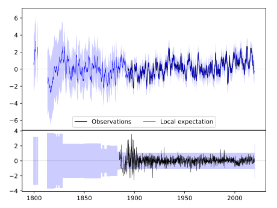
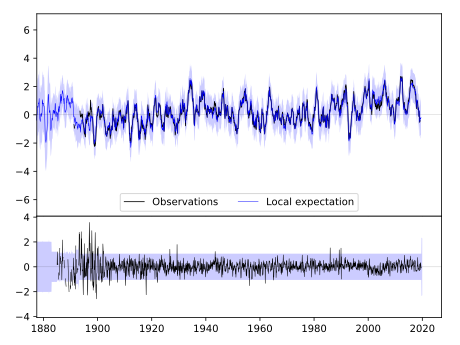
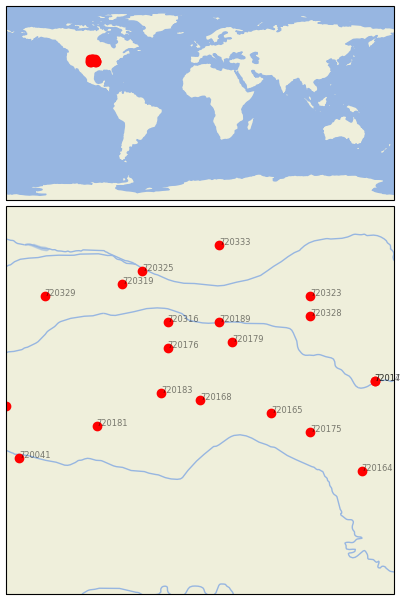

HAYS 1 S [USA]


| Neighbour | Name | Country | Distance | Lon/Lat | Years |
|---|
| 720168 | HAYS 1 S | USA | 0 | -99.3, 38.9 | 1885-2019 |
| 720183 | WAKEENEY | USA | 53 | -99.9, 39.0 | 1883-2019 |
| 720165 | ELLSWORTH | USA | 97 | -98.2, 38.7 | 1866-2019 |
| 720176 | NORTON 9SSE | USA | 98 | -99.8, 39.7 | 1893-2019 |
| 720179 | SMITH CTR | USA | 108 | -98.8, 39.8 | 1888-2019 |
| 720189 | FRANKLIN | USA | 135 | -99.0, 40.1 | 1890-2019 |
| 720316 | BEAVER CITY | USA | 140 | -99.8, 40.1 | 1890-2019 |
| 720181 | SCOTT CITY | USA | 145 | -100.9, 38.5 | 1889-2019 |
| 720175 | MCPHERSON | USA | 157 | -97.6, 38.4 | 1891-2019 |
| 720328 | HEBRON | USA | 205 | -97.6, 40.2 | 1886-2019 |
| 720319 | CURTIS 3NNE | USA | 224 | -100.5, 40.7 | 1893-2019 |
| 720323 | GENEVA | USA | 229 | -97.6, 40.5 | 1886-2019 |
| 720325 | GOTHENBURG | USA | 235 | -100.2, 40.9 | 1893-2019 |
| 720142 | MANHATTAN D.Burnette | USA | 235 | -96.6, 39.2 | 1828-2019 |
| 720174 | MANHATTAN | USA | 235 | -96.6, 39.2 | 1891-2019 |
| 720164 | EL DORADO | USA | 249 | -96.8, 37.8 | 1886-2019 |
| 720036 | CHEYENNE WELLS | USA | 260 | -102.3, 38.8 | 1889-2019 |
| 720041 | HOLLY | USA | 263 | -102.1, 38.0 | 1893-2019 |
| 720333 | LOUP CITY | USA | 268 | -99.0, 41.3 | 1893-2019 |
| 720329 | IMPERIAL | USA | 271 | -101.7, 40.5 | 1890-2019 |